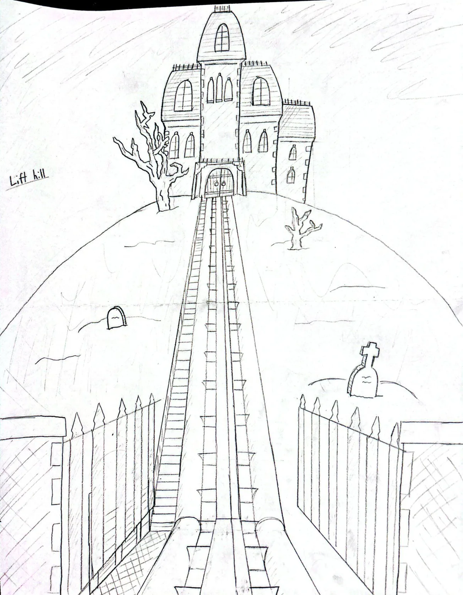
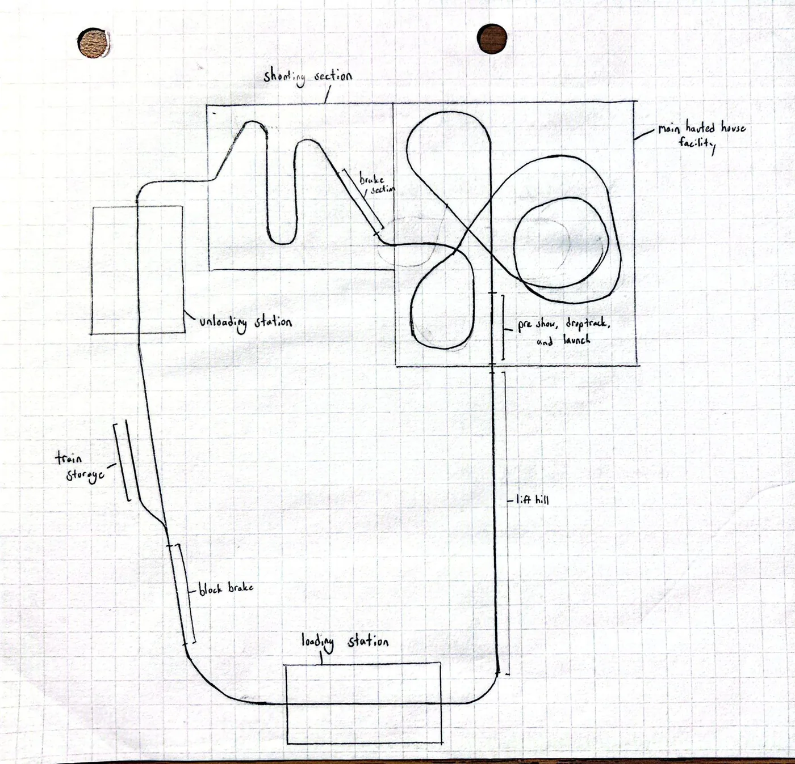
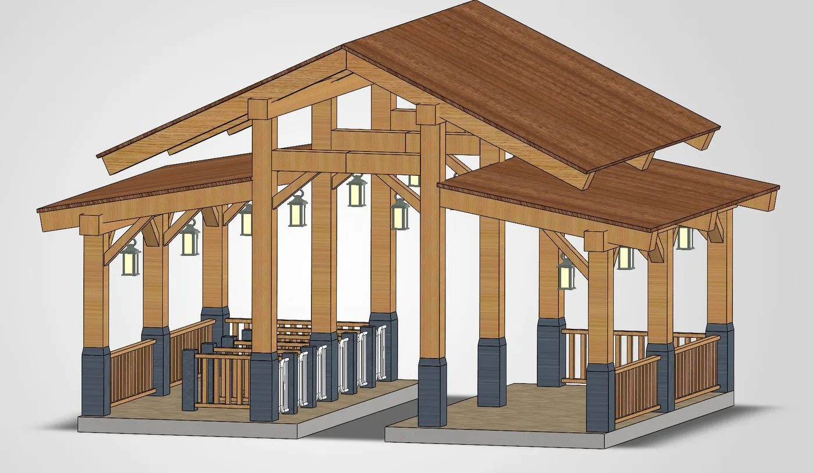
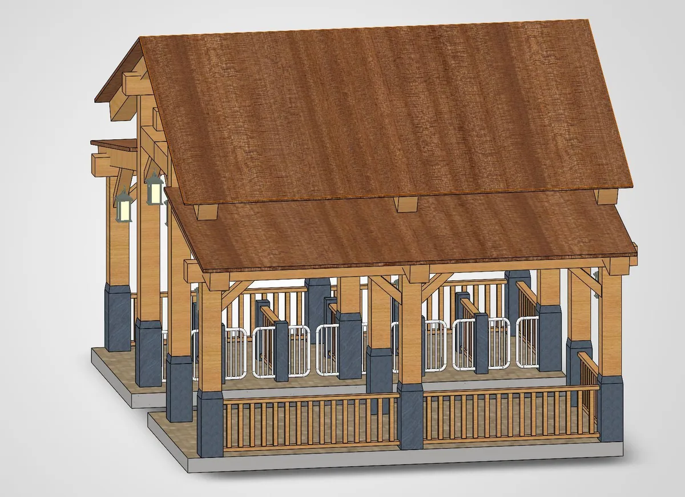
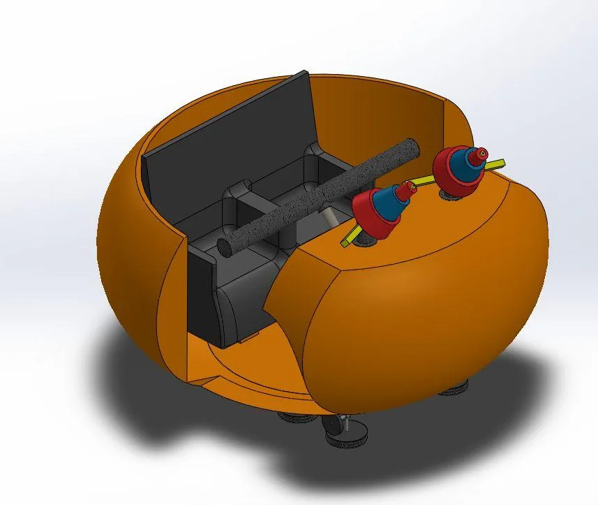
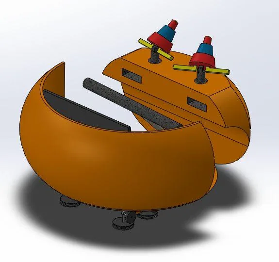
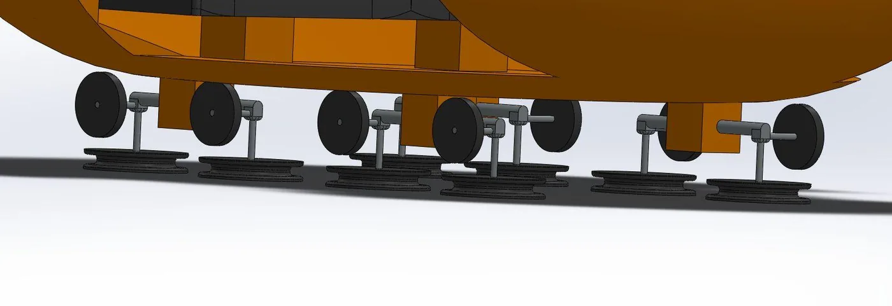
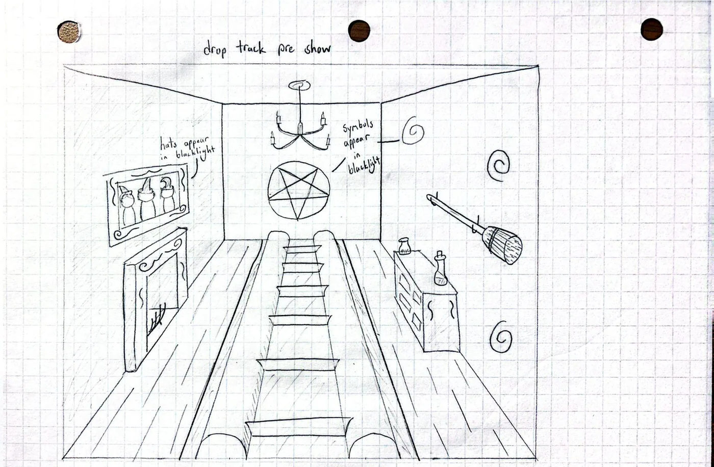

The Witch Next Door
| Team | Georgia Tech Theme Park Engineering Design |
|---|---|
| Context | Freshman Welcome Challenge — winning entry |
| Role | Team lead, four-person team |
| Dates | August – September 2026 |
A family thrill coaster for a Halloween-themed land, designed and pitched in about five weeks. I led a four-person team through the whole proposal — ride layout, SolidWorks design of the station and vehicle, the interactive target system, throughput and safety numbers, and the business case. It won the Freshman Welcome Challenge.
The ride
Riders board a pumpkin candy-basket car in Boo Junction, a 1950s American small town, and ride up the lift hill toward the grand estate on the edge of town for what looks like the last and best stop of the night's trick-or-treating. The witch answers the door with a trick: a 15-foot drop track drops the train into her manor, and the ride becomes a running battle through the cursed house and out into the courtyard before the town celebrates.
The story is the reason the ride system looks the way it does. The trapdoor has to land on the beat where the witch answers, so the drop track sits immediately after the lift rather than deeper in the layout. The courtyard fight needs riders facing the targets with time to aim, which is what the LSM launch into the courtyard section buys.


Ride system
Four systems in sequence: separate load and unload stations, a chain lift, the drop track, and an LSM launch. Splitting load from unload is what makes the throughput target reachable — a train can be unloading while the next one is already filling, so the station is not the bottleneck the dispatch interval has to absorb.


Three trains of six cars carry 12 passengers each. At roughly 120 cycles an hour that is about 1,440 guests per hour, with a ride duration of about 90 seconds and a maximum of 2.5 g — inside what a family thrill ride can hold while keeping the 39-inch height requirement.
Ride vehicle
The car is a pumpkin candy basket: two passengers, each with a water blaster aimed by a digital laser pointer the ride tracks for scoring. Two sealed storage tanks ride with each car, one of candy and one of raisins, replenished at an automatic refuel station so the dispatch interval is never waiting on a person restocking a train.



Scoring and the exit
Riders shoot at the witches throughout the manor, with the main battle staged in the courtyard. Scoring is per car, and the payoff is physical rather than a number on a screen: every rider gets Halloween candy at the end, and the lowest-scoring car in each train gets raisins instead. It is a small joke that does real work — it gives a family a reason to compete with each other for 90 seconds, and it gives the ride a reason to put a candy dispenser in the unload station.
The exit routes through the restaurant and gift shop and back into Boo Junction's town square, so the ride ends inside the land's celebration rather than at a turnstile.

What I would change
The scoring system is the weakest part of the proposal. A digital laser pointer read by trackside sensors is fine on paper, but we never worked out what happens when two riders in the same car hit the same target in the same frame, and the answer to that determines whether the scoring feels fair enough to compete over. For a ride whose entire payoff is the comparison between cars, leaving the tie-break undefined was the real gap.
I would also plan the drop track's capacity against the lift earlier. We sized the station for 1,440 guests an hour and then checked the rest of the circuit against it, which is backwards: the drop track is the slowest element to reset, so it, not the station, sets the real dispatch interval.
Credits
Designed with Derek Paterson, Zach Weaver and Willis McCranie. I led the team and wrote the ride's storyline; the SolidWorks design, operations numbers and business case were split across the four of us.